{kind=link}
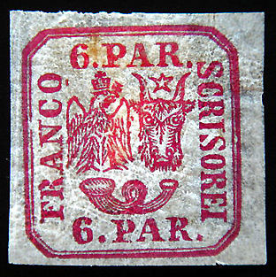


Return To Catalogue - Rumania 1858 first issue - Rumania 1858 second issue - Rumania 1865 issue - Rumania cancels on the first issues
Note: on my website many of the
pictures can not be seen! They are of course present in the
catalogue;
contact me if you want to purchase it.

Hand struck certified genuine stamp (striped paper), note the
slightly slanting almost horizontal lines in the paper.
3 p yellow 6 p red 30 p blue
These stamps were partly hand struck (2 varieties, 36 identical stamps in a sheet, 4 rows of 8 stamps) on normal or striped paper and typographed from plates (40 stamps in a sheet with 40 plate varieties, 5 rows of 8 stamps). The hand struck stamps have irregular distance between them (even overlapping stamps exist). The typographed ones always have a constant distance between them. These stamps exists printed sidewards to one another, as shown in the full sheets shown below. Unused stamps are much more common than used stamps (especially the 6 p).
Value of the stamps |
|||
vc = very common c = common * = not so common ** = uncommon |
*** = very uncommon R = rare RR = very rare RRR = extremely rare |
||
| Value | Unused | Used | Remarks |
| 3 p | R | RRR | Also exists in orange |
| 6 p | ** | RR | A lilac-red shade was not issued: **, it exists with forged cancels. |
| 30 p | ** | *** | |
For information concerning cancels on these stamps, click here.
Full sheet of hand struck stamps, image obtained from a
Corinphila auction, image also available at http://www.romaniastamps.com/.
Note very well printed stamps, next to rather badly printed ones.
Full sheet of 40 typographed stamps, image obtained from a
Corinphila auction, image also available at
http://www.romaniastamps.com/. Note the appearance of nail marks
on some of the stamps.
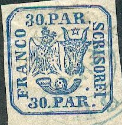
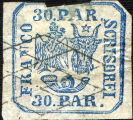
How to distinguish forgeries? The characteristics of the genuine stamps are (Album Weeds):
3 pa yellow: The octagonal frame exists of two separate lines (however, often blotched together). The word 'FRANCO' measures almost 14 mm and the letters are not more than 1 3/4 mm high. There is a white patch at the top of each of the wings of the eagle.
Album Weeds describes 4 forgeries; In the 1st forgery, the eagle's wing near the 'C' of 'FRANCO' is completely coloured, the 2nd forgery has the word 'PAR' very slanting, the 3rd forgery is in orange-brown colour and has the word 'SCRISOREI' slanting. Finally, in the 4th forgery the star above the head of the bull has 6 rays (instead of 5) and the frame around the stamp is composed of three lines (instead of two).


This could be the 3rd forgery of Album Weeds with the word
'SCRISOREI' slanting. The wing of the eagle points towards the
'O' of 'FRANCO'. This letter is too narrow. The 'C' of this word
is too open. The 'O' of 'SCRISOREI' is also badly shaped. I've
also seen this forgery in the color yellow. Next to it a 6 pa
forgery and a 30 pa forgery, made by the same forger.


4th forgery of Album Weeds, extra frame line. Note the bogus
cancel on the second image (reduced size). Sometimes these
forgeries have a bogus "FRANCO"
cancel, that can also be found on other forgeries.


Forgeries with "ROMA ? A?O 60" cancel
6 pa red: The octagonal frame exists of two seperate lines. There is a stop after each '6' and each 'PAR' (and sometimes behind 'FRANCO'). The star has 5 rays. There exist non-issued stamps of 6 pa in lilac-red with forged cancels.
Album Weeds describes 4 forgeries; In the 1st forgery the shading in the posthorn is different from the genuine stamps. The 3rd forgery has the frame composed of three lines (it should be two lines) and there are no stops behind both the '6'. The 4th forgery is equal to the 3rd one, but with a stop added behind the lower '6' and other minor differences.

3rd forgery (first image) and 4th forgery (second image) of Album
Weeds, extra frame line. The stars have six points instead of
five.
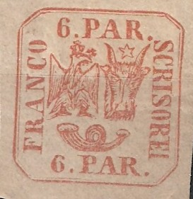
Other forgery, left wing too sharp, beak of eagle strange, 'O' of
'FRANCO' an ellipse, ears of bull badly done, etc. In the second
example there are some flaws on the printing plate in the wing
and head of the eagle. I have seen other forgeries with exactly
the same flaws.

I've been told that this is a forgery, in my view, the corners
are too rounded.

Forgery of the 6 pa value, similar to the 3 pa forgery described
above.

A Winter forgery; note the scratch
across the right hand side of the central part of the body of the
eagle (this characteristic seems to be constant on these
forgeries).
Peter Winter also offered tete-beche forgeries of the 6 p value
(the above stamps were offered as genuine on Ebay, by the way).
Very dubious item with eagle with small wings.
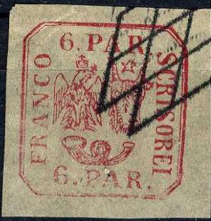
Most likely a forgery
Some forgeries of the 6 pa in bogus colours. Note the break in
the frameline next to the 'RA' of 'FRANCO'.
30 pa blue: The octagonal frame exists of two seperate lines. There is a stop after each '30' and 'PAR'. The eagle's wing touches the ear of the bull.
Album Weeds describes 3 forgeries of the 30 pa: The 2nd forgery has the frame composed of three lines (it should be two lines) and the star has 6 rays (instead of 5). The 4th forgery is equal to the 3rd one, but with some minor differences.
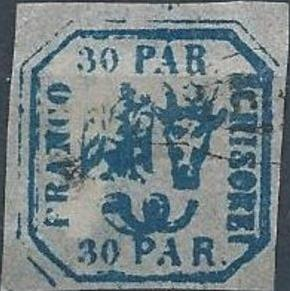
2nd forgery of Album Weeds, extra frame line. Second image
reduced size


Other forgery of the 30 p value
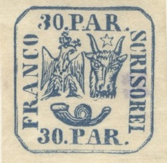
This forgery has a small upper part of the "R" of
"PAR". The left wing of the eagle is very pointed. The
"R" of "FRANCO" has an upward turning bottom
right loop. This forgery also exists in the value 6 pa.
Forged cancel 'BUCURESCI 25/9' on two forged 30 pa stamps
(reduced size)
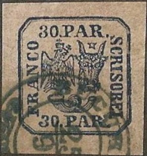 

The same forged stamp with forged 'BUCURESCI 25/9' cancel. This
forgery has the top ray of the star too small or broken, the
middle part of the 'P' of the upper 'PAR' is not horizontal, the
right horn (from our perspective) is not curved enough at the
right hand side. The foot of this letter is connected to the dot
behind the '30'. Next to it the same forgery with a 'FRANCO
ROMAN' and another cancel.
I have very strong doubts about this stamp, although it is listed
on http://www.romaniastamps.com/ as genuine. The outer framelines
are too far apart and there are many other small differences in
the design.

Other forgery, note the different horn.
Very dubious stamp, 'N' of 'FRANCO' slanting, first 'R' of
'SCRISOREI' slanting etc.
I have my doubts about the following two stamps, forgeries?:
The left horn of the bull almost touches the 'A' of 'PAR'. The
'O' of 'FRANCO' is elliptic.
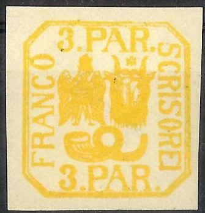


Modern forgery(?) of the 3 p value with "PAR" too
large. Next to it a similar forgery, but apparently much older
with a parallel lines cancel. The posthorn is very strange and
the lettering is too large. I've been told that this is a
so-called Hamburg forgery. Next to it a forgery of the previous
set, made by the same forger (also with too large lettering).
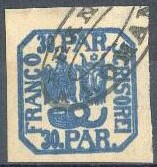
Very badly done forgeries of the 3 pa and 30 pa values, with the
head of the ox and the eagle too small. These forgeries are
printed very blur. The stars have six points instead of five. All
three values have no dot behind the value. Sometimes these
forgeries have a bogus "FRANCO"
cancel, that can also be found on other forgeries.
Two forgeries pasted on piece of a letter.
Some modern 'Repliks' (even in a bogus color); possibly made by
the forger Peter Winter.

6 par stamp with forged cancel.
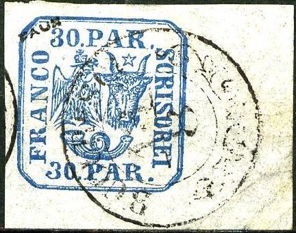
Deceptive forgery with 'FAUX' overprint; I suspect it to be a
genuine stamp with forged cancel.

Peculiar forgery; 30 p black, the eagle is not holding a cross
but a hammer in his mouth.
An essay of 1865 showing an eagle design. This design was never
used for an actual stamp (reduced size).
{kind=link}
{kind=link}
{kind=link}
{kind=link}
{kind=link}
{kind=link}
{kind=link}